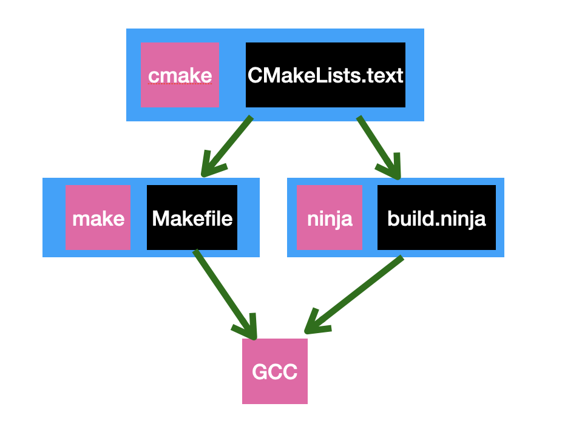

命令与规则
图中粉色的内容cmake、make、ninja、gcc都是命令也就是可执行程序
黑色内容本质上是文本文件，只不过是根据一定规则编写的
文件对应的命令可以解析这些规则并执行相应的命令
比如，cmake程序对应的是CMakeLists.txt文件，CMakeLists.txt的编写是遵循一定的语法规则的，类似于Java、C语言等，但是它更简单，更类似于一种脚本语言。
当执行cmake程序（或者叫做调用cmake命令）时，cmake会去读取CMakeLists.txt的内容并按照约定的语法规则进行解析，然后cmake会根据CMakeLists.txt中的指示去做一些动作，比如操作文件、调用系统命令等等。
这就好比厨师做菜，厨师根据菜谱的指示拿着鸡鱼肉蛋和厨具做菜，厨师就相当于cmake程序，而菜谱就是CMakeLists.txt.
为什么会有这样的设计
最初要编译C语言需要使用一个扩增自由Pastel语言编写的编译器，后来为了使C语言具有可移植性并增强编译器的性能和编译速度，GCC营运而生。从1987年开始GCC获得了不断的增强，到现在可以编译非常多的语言，并且支持市面上几乎所有的CPU架构。
随着项目的增加和复杂度的提高以及对编译速度的需求，单独使用GCC逐渐不能满足了。这时候需要一个工具来解放程序员执行GCC命令的工作，**make和MakeFile应运而生**。通过按照一定规则编写的makefile文件可以很好的应对大型项目，而且经过一次编写之后就可以通过一条make指令重复使用，简直就是码农的福音。
但是，经过若干年的发展，make和makefile逐渐变的臃肿，越来越无法满足用户对速度的要求。为了提高项目的编译速度，**ninja出现了**，起初它只是用来编译Google Chrome浏览器，后来由于它卓越的性能被用到了其他项目中。相信有一天ninja也会和make一样被时代抛弃。。。
make和ninja虽然解决了每次编译都要重新执行GCC的痛苦，可是它们也需要编写自己的文件，而且由于不同计算机指令集的命令不同，makefile和build.ninja文件也要区分CPU架构，这就造成一个跨平台的应用程序进行平台移植的时候要分别编写适用于对应平台的文件。
为了能够自动生成对应平台文件，**cmake出现了**。cmake是一个与平台无关的工具，cmake执行通过按照一定规则编写的CMakeLists.txt后，会生成对应平台的makefile或者build.ninja，之后再使用make或者ninja就可以生成对应平台的二进制可执行文件了。
至此，我们对编译工具家族有了一个自下而上的了解，这也是代码编译过程中用到的工具链。虽然现在开发大多使用IDE，很少接触到这些知识，不过作为了解还是很有意义的。
也许未来有一天，cmake也会和gcc一样成为背后英雄不为人所知，谁知道呢。。。
想了解更多内容关注公众号【iOS开发栈】